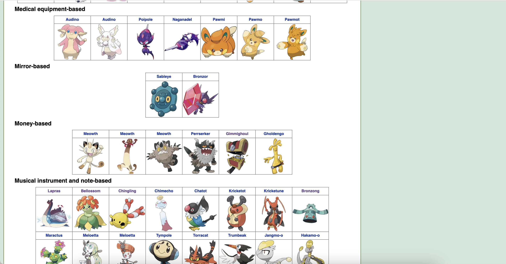
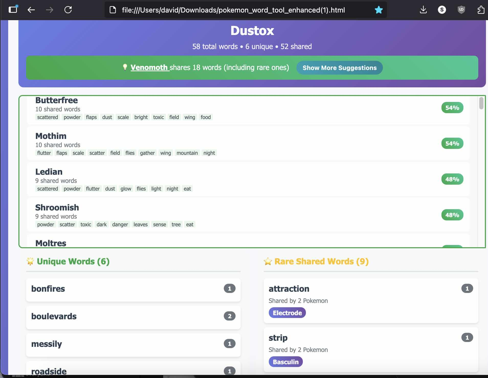
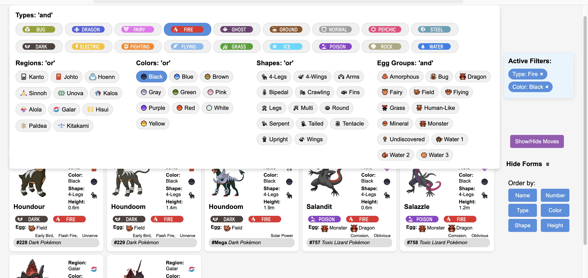
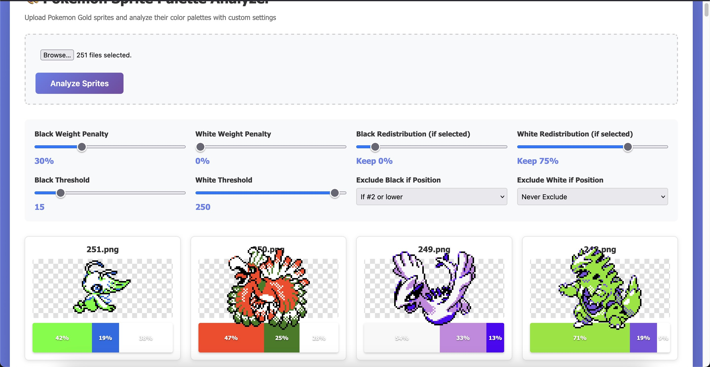
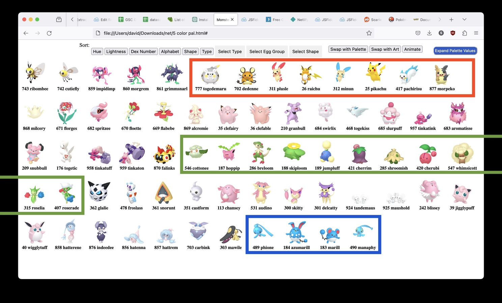
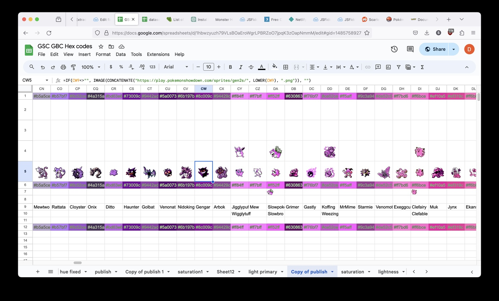
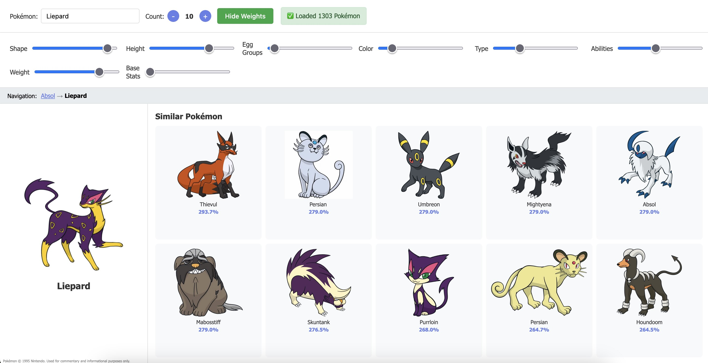
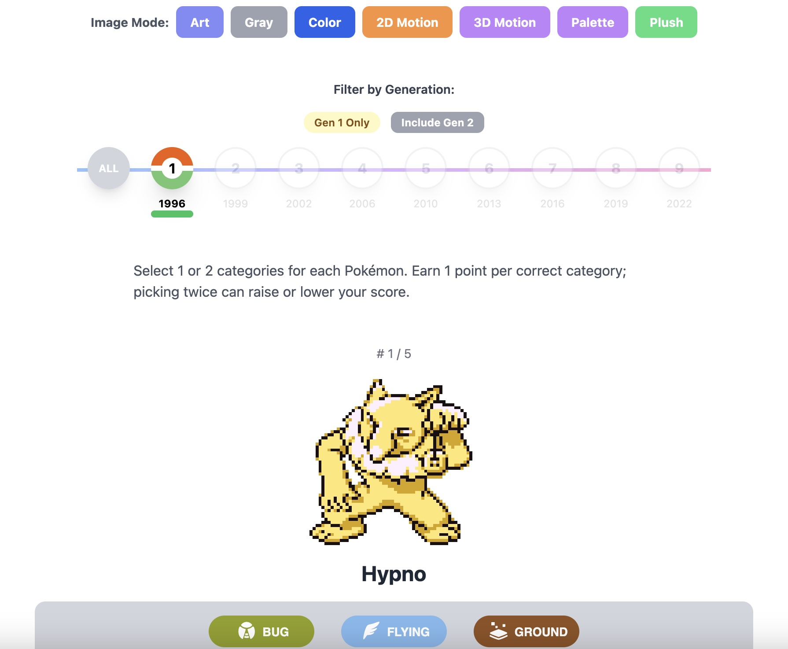
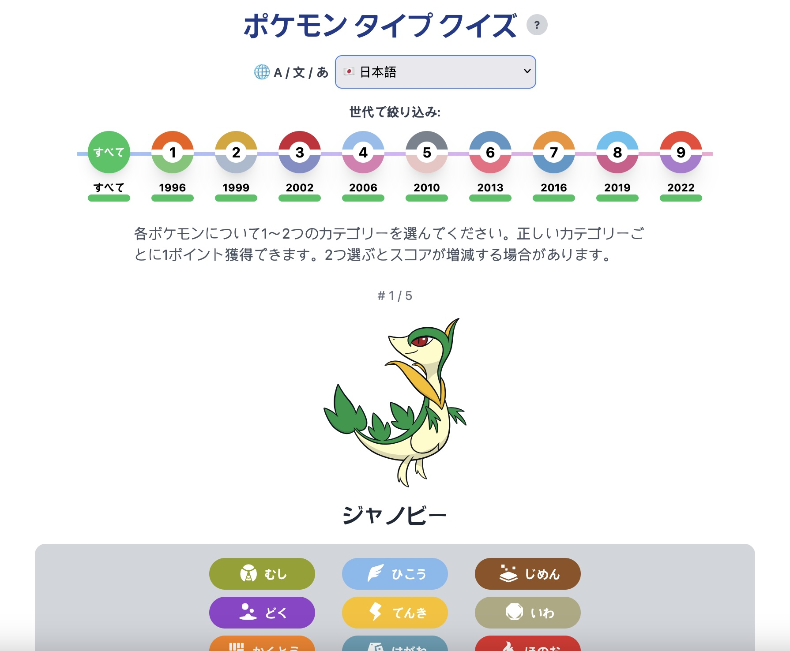
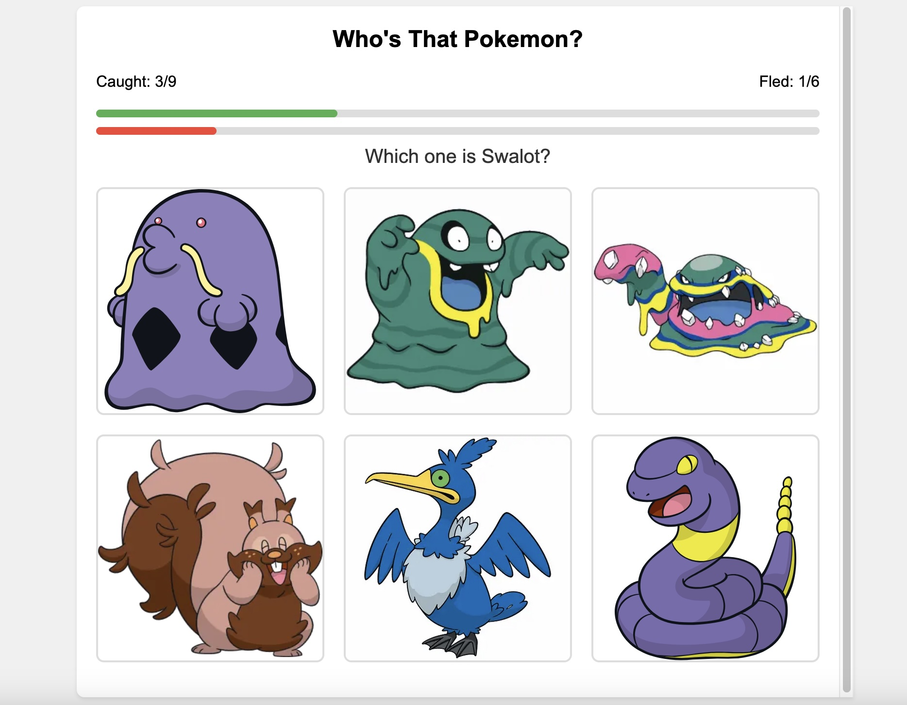

A semantic search engine for 1,025 Pokémon—built with AI, powered by information architecture
This project started as a desire to analyze and filter Pokémon data in ways that weren't available from other fansites. It also helped me learn to code with AI. Yes, AI handled all the coding. No, I still don't know how to write a Python script. Does it matter? You decide.
The real challenge wasn't code—it was structure.
Veekun is probably the most sophisticated search engine out there, and Bulbapedia is the most comprehensive. I guess I like lists and labels.
As far as I know, I'm the only person to feed the entire Pokédex into AI and have it classify each sentence into a concept from a controlled vocabulary. A semantic-based Pokémon search engine? Anything is possible with Claude AI.
Live Tools
The full semantic search engine. Filter by habitat, behavior, body traits, powers, and 100+ structured tags across all 1,025 Pokémon.
Flagship Tool →Visual height and weight comparisons for Pokémon's 30th anniversary. How big is a Wailord compared to a Joltik?
30th Anniversary →Find each Pokémon's nearest neighbor by adjusting attribute weights—color, type, shape, stats.
Explore →Every text element and icon is a clickable filter. Unlimited filter combinations with real-time updates.
Explore →Semantic Pokédex in Action
The flagship tool doesn't just filter—it summarizes. Select any combination of filters and the Pokédex instantly generates aggregate stats: type distributions, most common abilities, shared moves, and top lore tags across your results. It turns 1,025 creatures into answerable questions.
Size Comparison Tool
Built for Pokémon's 30th anniversary. Compare any combination of Pokémon side-by-side with accurate height scaling, a human silhouette for reference, and toggleable grid lines. Supports both static artwork and animated sprites.
Most official Pokémon products just group by elemental type—“Fire” or “Grass”—which gets boring across 1,000+ creatures. As live-service games like Pokémon GO and Pokémon Pocket TCG use seasonal events and quests, there's a bigger need for more interesting ways to group Pokémon: by climate, by body type, by behavior. Structure matters just as much as code.
30 years of Pokémon flavor text with no fixed schema. Entries are recycled, incomplete, and impossible to compare across species.
Custom AI-coded tools to deduplicate entries, classify phrases into structured categories, and create interactive filtering—all built in plain English.
Gave instructions to Claude AI and ChatGPT to build dozens of single-use scripts, treating the computer like a team member. All data from publicly available sources.
Process

Started with a script to pull all Pokédex text entries, then another to deduplicate recycled text. Each problem required a new single-use tool—AI coded word frequency counters, categorization tools, and term mergers all in plain English instructions.
All data comes from publicly available sources. When looking through the data I didn't need it all—I renamed a few things, switched up some list systems, and found inaccuracies that became good practice in data integrity.

Over 500,000 words of Pokédex text were analyzed phrase by phrase. Every phrase was classified into structured categories using a controlled vocabulary I designed, making messy unstructured text fully searchable and filterable.

Discovered that color was the biggest factor in how people interpret Pokémon designs. Used K-means clustering to generate color palettes from sprites, then sorted by hex values to find patterns and duplicates.

Original 2-color sprites—too much black/white for accurate color analysis

Modern 3D models provided accurate color proportions for palette extraction

One of my goals was to discover relationships—mostly to improve fan projects and encourage better merchandise, since most attributes get ignored or don't have assigned labels for things like “climate” or “dog.”
Built a weighted similarity calculator that scores Pokémon across color, type, shape, and stats. Users can adjust attribute weights in real-time—a good experiment in determining each Pokémon's nearest neighbor.
By creating new groups and connections, it naturally triggers completionist behaviors in fans, enables product collections for merchandising, and supports highly specific use cases—Pokémon for a construction site, a pirate party, or even a breakfast cereal tie-in.

Early user research revealed a critical gap: how do people actually associate visual designs with type labels? A traditional Google Form couldn't capture the nuance—I needed something smarter that could randomize Pokémon, track partial credit scoring, and adapt to different visual modes.
Built an AI-powered quiz that collects data on how users associate visual qualities with elemental types. Users select 1–2 types per Pokémon across different image modes (artwork, grayscale, sprites, 3D motion, palettes).

To reach a global audience—especially users unfamiliar with Pokémon—I added instant language switching. The interface updates on the spot, allowing anyone to participate regardless of their native language.
This wasn't just about translation. Different type labels in different languages could bias design decisions. Does “Agua” (Spanish for Water) evoke different visual associations than “みず” (Japanese) or “Eau” (French)?

Players identify Pokémon before they “flee”—testing whether the core visual identity is strong enough for global recognition. The game serves as both user research validation and a demonstration of content localization challenges in global products.

What This Demonstrates
Built smarter research tools than Google Forms—randomization, partial credit scoring, multi-modal testing across 7 image types
29+ language options reveal how type labels bias visual perception—critical for localization and international products
Built interactive research surveys, similarity calculators, and validation games using AI without coding knowledge
Structural thinking turns messy, inconsistent data into organized, findable product inspiration—proving that structure matters as much as code